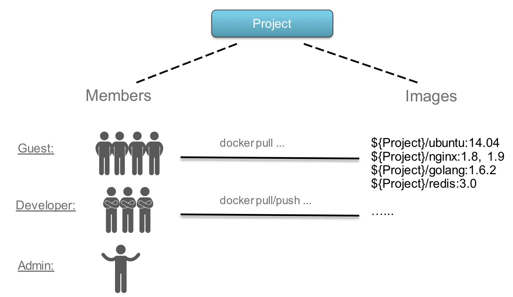
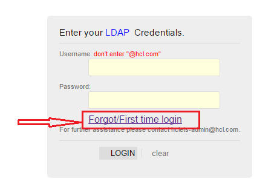
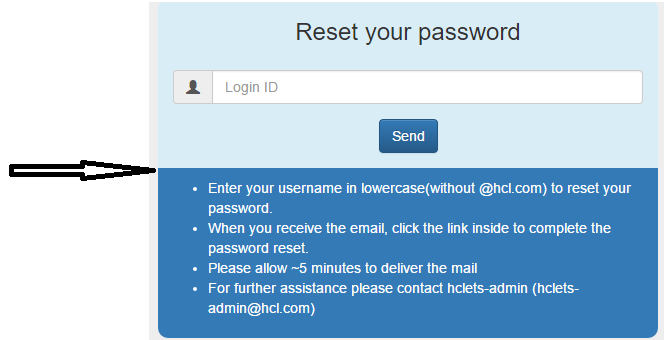
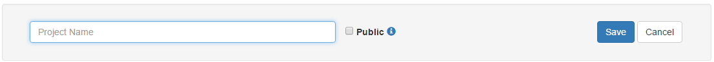
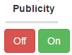
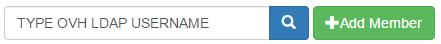
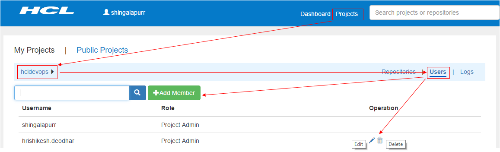
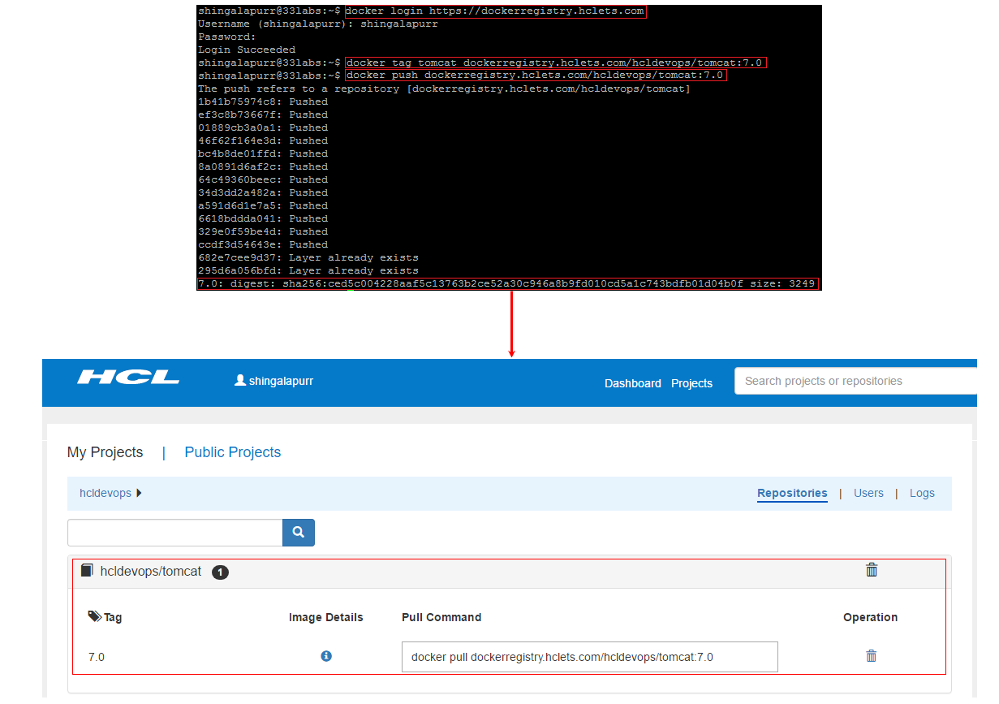
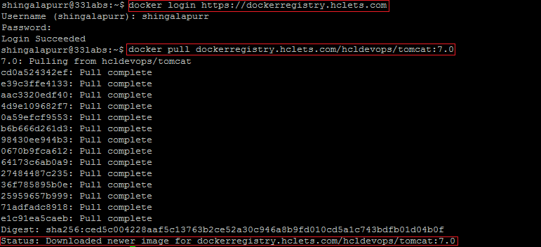

Introduction
What it is?
The Registry is a stateless, highly scalable server side application that stores and lets you distribute Docker images.
Why use it?
You should use the Registry if you want to:
# Tight control where your images are being stored
# Fully own your images distribution pipeline
# Integrate image storage and distribution tightly into your in-house development workflow
Overview
Role Based Access Control(RBAC)

HCL Private Docker Registry manages docker images through projects. Users can be added into one project as a member with three different roles:
# Guest: Guest has access only to pull-only docker images privilege for a specified project.
# Developer: Developer has pull and push docker images privileges for a project.
# ProjectAdmin: When creating a new project, you will be assigned the "ProjectAdmin" role to the project. Besides push-pull docker images privileges, the "ProjectAdmin" also has some management privileges, such as adding and removing members.
Besides the above three roles, there are two system-wide roles:
# SysAdmin: "SysAdmin" has the most privileges. In addition to the privileges mentioned above, "SysAdmin" can also list all projects, set an ordinary user as administrator and delete users. The public project "library" is also owned by the administrator.
# Anonymous: When a user is not logged in, the user is considered as an "Anonymous" user. An anonymous user has no access to private projects and has access only to pull docker images from public projects.
Login
How to Login to HCL Private Docker Registry?
To access HCL private docker registry one should have OVH LDAP account. If you don't have one then please follow the below steps:
Open the URL https://login.common.hclets.comand click on Forgot/First time login. Then follow the instructions displayed on "Reset your Password" page.

Managing Projects
A project in HCL Private Docker Registry contains all repositories of an application. No images can be pushed to HCL Private Docker Registry before the project is created. RBAC is applied to a project.
There are two types of projects in HCL Private Docker Registry:
# Public: All users have the read privilege to a public project, it's convenient for you to share some repositories with others in this way.
# Private: A private project can only be accessed by users with proper privileges.
You can create a project after you signed in. Enabling the "Public" checkbox will make this project public
Steps to be followed to create a project:
Step 1: Login to HCL Private Docker Registry
Step 2: Click on which is available in the header then click on
Step 3: Enter the project name (check the check box to make it public) and then click on save. 
Note: Project name must be unique name.
Step 4: If you haven't made project as public while creating or in Step 3 then you can make it public and private by making it on/off option:

To delete the project click on available under
Managing User Access
Owner of the project can add/remove members to the project and can promote or demote the roles of existing users.
A member when added to the project he/she can be granted anyone of the below role:
# Guest: Guest has access only to pull docker images for a specified project.
# Developer: Developer has push and pull docker images privileges for a project.
# ProjectAdmin: When creating a new project, you will be assigned the "ProjectAdmin" role to the project. Besides push-pull docker images privileges, the "ProjectAdmin" also has some management privileges, such as adding and removing members.
To add or remove a member follow the following steps:
Step 1: Login to HCL Private Docker Registry
Step 2: Click on which is available in the header, then click on respective project.
Step 3: Then click on to manage users - edit the roles of existing users, delete the user access to project and to add a new user you need to search that user in the text box  then click on add member.

[ NOTE: Only those users who have made atleast one successful login into HCL Private Docker Registry via web browser are eligible to be member of a project. ]
Managing Docker Images
How to push Docker images to HCL Private Docker Registry?
To push a docker image to HCL Private Docker Registry follow the following steps:
Step 1: Create a project in HCL Private Docker Registry via web browser using URL https://dockerregistry.hclets.com
[ For more information visit Managing Project ] (Skip this step if you have already created project or have proper privileges to existing project)
Step 2: Login to HCL Private Docker Registry via Docker using command docker login https://dockerregistry.hclets.com
[ Enter your OVH LDAP username and password when prompted for the same ] [ For more information on docker login visit Docker Docs ]
Step 3: Now tag the docker image that you want to push to HCL Private Docker Registry using docker command
docker tag <image_name> dockerregistry.hclets.com/<project_name>/<image_name>:<version>
For example if you want to push tomcat docker image then tag it using the command:
docker tag tomcat dockerregistry.hclets.com/hcldevops/tomcat:7.0
[ For more information on docker tag visit Docker Docs ]
Step 4: Once the docker image has been tagged then perform a push to HCL Private Docker Registry using docker command docker push <image_name> For example, docker push dockerregistry.hclets.com/hcldevops/tomcat:7.0
[ For more information on docker push visit Docker Docs ]
Step 5: Now login to HCL Private Docker Registry via web browser and you will be able to see docker image tomcat:7.0 listed under the project hcldevops

How to pull Docker images from HCL Private Docker Registry?
To pull a docker image from HCL Private Docker Registry follow the following steps:Step 1: Login to HCL Private Docker Registry via Docker using command docker login https://dockerregistry.hclets.com
[ Enter your OVH LDAP username and password when prompted for the same ] [ For more information on docker login visit Docker Docs ]
Step 2: Now execute the docker pull command docker pull <image_name> For example if you want to pull tomcat docker image then use the command docker pull dockerregistry.hclets.com/hcldevops/tomcat:7.0
[ For more information on docker pull visit Docker Docs ]
